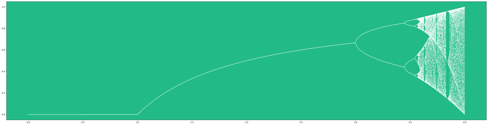

./code/chaos/readme.txt
Take your time to understand this python program...
It generates one of the most interesting graphs in all of math. At certain points it is predictable, at others, it is quite "random". It is actually very hard to
This program uses the python module matplotlib a.k.a. "math plot library" to draw the graph. It's the python graphing calculator. You may need to download this module.
./code/chaos/chaos.py
from matplotlib import pyplot as plt
import numpy as np
plt.rcParams['axes.facecolor'] = '#22bb88'
plt.rcParams['figure.figsize'] = 40,10
# x and y values to be plotted
a_values = []
outputs = []
def iterator(a, x):
global a_values, outputs
old = x
output_set = set()
# wait to stablize
for _ in range(1000):
new = a*old - a*old**2
old = new
# either cycle is found or goes into chaos
while new not in output_set\
and len(output_set) < 100:
output_set.add(new)
new = a*old - a*old**2
old = new
outputs.extend(list(output_set))
a_values.extend([a]*len(output_set))
# generate points for range of a values
STEP = 0.001
INITIAL_SEED = 0.5 # arbitrary starting pt 0<x<1
for a in np.arange(0, 4, STEP):
iterator(a, INITIAL_SEED)
title = 'test'
plt.scatter(a_values, outputs, color = 'white', s = 0.2)
plt.savefig(title + '.png', format='png', dpi = 300, bbox_inches = 'tight')
plt.show()